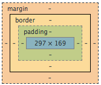

Margins, Padding and Borders!!
This might not seem that exciting but it was one of my aha moments of the week when I finally figured it out. I will do my best to explain it to you. The content of an HTML element is housed within three square rectangles. The outermost rectangle is the margin and it is the distance between the element and the next element or the side of the screen. Inside of the margin is the border box. This box can be used to create a border around the element. Inside the border box is the padding box which separates the content from the edges of the element. This all sounds very confusing but a picture will help.

So as you can see from the above diagram margin, padding and border play an important part of web design. The thing that I really like about about Chrome dev tools is that it gives you a picture, just like the one above, in the css window. This makes it so easy to edit and move things around. You can even click on the diagram and use that to put in the margin, padding and borders in real time.
Borders are used to give the content more structure. It allows you to make things stand out more. There are many types of borders available to choose from and you can choose how thick you want them to be. It is also a great way to add color to the site. If you look at this blog, I am using a thin black border around the main content area. I like the way it looks because it is not overpowering.